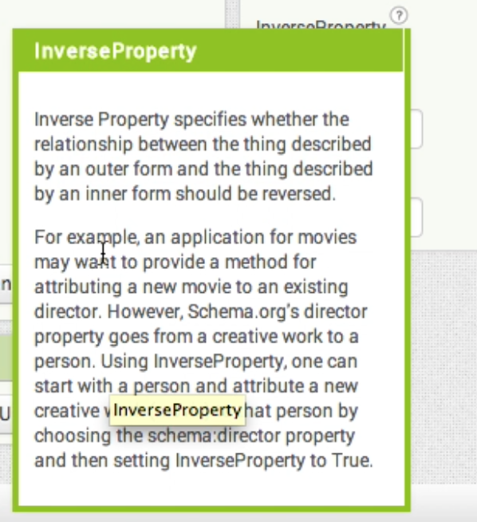

Punya Tutorials
The video below summarizes many of the functionalities that are described in detail in Tutorials 1 - 15. We encourage you to take a look at this first before starting this tutorial.
For many of the tutorials listed below we have included the AIA file that you can try out on our App Inventor Punya instance at http://ai-qcri-test.appspot.com/, and the APK file that you can try out on your phone.
-
Punya Tutorial Roadmap
- Consuming Linked Data
-
Producing Linked Data
- 4 Construct a form to enter missing person data Goes somewhere
- 5 Save the constructed data in the phone Goes somewhere
- 6 Insert constructed triples in a SPARQL endpoint Goes somewhere
-
Push Messaging
- 7 Send an alert to a phone Goes somewhere
- 8 Construct a report and send it to a streaming service Goes somewhere
- 9 Receive reports from a streaming service Goes somewhere
-
User Interface Features
- 10 Linked Data List Picker Goes somewhere
- 11 Auto-completion
- 12 Pop-up boxes
- Setting up Third Party Web Services that interact with Punya components
Consuming Linked Data
1. Query a Remote Endpoint
In this screencast we will show you how to query DBPedia and obtain the raw results. We use the LinkedData component, and a Label to display the results.
The query used in this app is
PREFIX dbo: <http://dbpedia.org/ontology/>
SELECT * WHERE {
?snippet a dbo:Place;
geo:lat ?lat;
geo:long ?lng.
FILTER (?lat > 42 - 1 && ?lat < 42 + 1 &&
?lng > -71 -1 && ?lng < -71 + 1)
}
LIMIT 100
Producing Linked Data
Push Messaging
User Interface Features
12. Pop-up boxes
The property panel in the App Inventor interface has "?" signs next to each property name (See Fig 1) explaining what each of the properties are about.
These can be very useful in understanding Linked Data properties, such as FormID (Fig 2), and InverseProperty (Fig 3) that may not be obvious from the name. We encourage you to read the text to
understand the correct usage of the properties.
Fig 1
 Fig 2
Fig 2
 Fig 3
Fig 3

Third Party Services
13. Setting up Google Maps on App Inventor
You need to include the Google Maps API key in your App Inventor Project and give the SHA1 of your app in the Google Apps Console Android Key.
In Android, the SHA1 serves as the identifier for the app. This is required by Google if you want to publish the your created app to the Google Play Store.
App Inventor has the default the package name and the class name, so you can’t change them.
The default format is the following
appinventor.ai_[gmail account name, exclude the “@gmail.com”].[app name]
Here are the steps you need to follow:
- Build the app at least once to get the SHA1 fingerprint.
- Open the project’s UI Designer -> Settings -> SHA1
- You should see a dialog box with the SHA1
- Construct the Android key as follows:
[SHA1];appinventor.ai_[gmail account name, exclude the “@gmail.com”].[app name]. - Go to the Google API console
- Create new Key -> Android Key
- Input the key created
- Copy the API key
- Paste the API key in to the App Inventor settings dialog for Google Maps API Key

14. Google App Script Server for Google Cloud Messaging
You need to set up a Web Service using the Google App Script Server to send and received messages to mobile phones.
We assume that you have basic JavaScript programming skills. Please refer to Google App Script Server documentation, and the Google Cloud Messaging documentation. Specifically, make sure you understand how to deploy a service.
We have shared a simple Google App Script. Please make a copy of that in your own Google Drive. You can tinker that script to deploy your own service.
The doPost(e) function in serverMain.gs captures HTTP Post messages from the phones and other services such as CSPARQL Engine. We have pre-defined several HTTP Post parameters and provided the logic to handle them. Please take a look at the following parameters:
type: can take valuessubscribe(for a query subscription),sendAll(to send a message to all the devices registered with GCM)regID: when registering a device with GCMcontents: the results from a CSPARQL query execution
Using the Google App Script server in conjunction with CSPARQL:
- Please change the following in
serverConstants.gs:SERVER_URL: URL of the CSPARQL engine if you are running your own instanceGCM_Server_URL: URL of the deployed script
- In order to register a query, the
doPostfunction should recieve the HTTP Post parametertypewith valuesubscribe - A
UUIDneeds to be created to uniquely identify the query results targetted for the respective device linkedDataMain.gslists some of the pre-packaged queries as well as helper functions
Debugging: if you are testing database inserts or anything that does not require the receipt of an HTTP Post request, you may use Run -> [name of function], and check for any output at View -> Log. To debug functions that are dependant on HTTP Post requests, please follow this procedure:
- Create a spreadsheet in your Google Drive, and locate the id of the document. (The id is the long string of charaters that follow https://docs.google.com/spreadsheets/d/ )
- Copy the id to
LOGGING_SPREADSHEET_IDinserverConstants.gs. - The
MyLogfunction in serverMain.gs implements the logging functionality. - The function as
MyLog(functionName, tag, msg) - You will see the debug output in the spreadsheet you created.
- Please note that having
MyLogwill significantly slow down your app. So, make sure to comment out or remove MyLog calls in a production settings.
15. C-SPARQL for Streaming RDF Data
We have used C-SPARQL to add streaming capabilities to Punya apps. Streaming data can be very useful in crowdsourcing applications where different parties can submit information that needs to be filtered based on a certain criteria.
We have set up a C-SPARQL endpoint for experimentation at http://air.csail.mit.edu:8175/ . If you like to register your own stream and feed data to it, please follow these steps. For more detailed information please refer to the official C-SPARQL documentation.
- Register the stream:
curl PUT http://air.csail.mit.edu:8175/streams/[URL encoded stream URI]for example,curl PUT http://air.csail.mit.edu:8175/streams/http%3A%2F%2Fex.org%2Fgcm
- Register a query:
curl -X PUT http://air.csail.mit.edu:8175/queries/test -d 'REGISTER STREAM test AS PREFIX : <http://streamreasoning.org/ontologies/sr4ld2013-onto#> select * FROM STREAM <http://ex.org/gcm> [RANGE 1m STEP 10s] WHERE { ?s ?p ?o. }' - Register an observer for the query: (note that the Google App Script server can be configured to be an observer)
curl -X POST http://air.csail.mit.edu:8175/queries/test -d [Observer URI] - Feed RDF data to the respective stream
curl -X POST -H 'Content-Type: text/plain; charset=UTF-8' -d [DATA] http://localhost:8175/streams/http%3A%2F%2Fex.org%2Fgcm